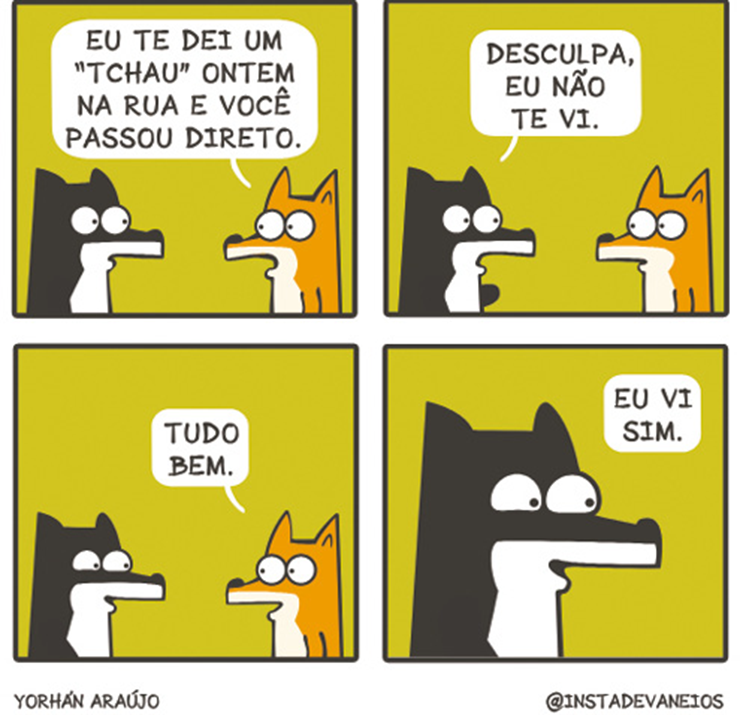

Na descrição de ações, como as representadas neste cartum, é o verbo que organiza o núcleo sintático das sentenças.
Rafael Corrêa
Estudamos que o sistema da língua nos permite situar eventos discursivos no tempo cronológico (pretérito, presente e futuro). Para isso, a classe dos verbos é fundamental, pois é o verbo que organiza o núcleo sintático das sentenças que produzimos, demarcando ações, estados, fenômenos da natureza, processos, implicações etc. Contudo, a partir desse núcleo, se fizermos um exercício de síntese gramatical para reduzir as sentenças de um texto às suas informações essenciais, perceberemos que há termos obrigatórios à coerência e à adequação sintática da frase e outros que funcionam como acessórios, acrescentando aspectos à mensagem transmitida.
Neste capítulo, estudaremos termos integrantes e acessórios relacionados ao verbo, demonstrando como as questões de clareza e coerência textuais também se relacionam à forma como estruturamos sintaticamente as sentenças. Na imagem acima, por exemplo, para descrever as situações representadas pelo cartunista e depreender o sentido construído no cartum, precisamos utilizar sentenças que representem as ações desenvolvidas em cada quadro. Pensando nisso, responda às questões propostas.
- Escreva uma sentença para cada quadrinho.
- Explique o duplo sentido construído visualmente e interprete a crítica apresentada no cartum.
- A passagem da Idade Média para a Idade Moderna é marcada por uma crescente ambição humana. Como as inovações científicas contribuíram para o estabelecimento dessa nova realidade?
Neste capítulo, serão abordadas as habilidades EM13LP01, EM13LP02, EM13LP07, EM13LP08.
O predicado verbal pode se configurar de diferentes formas dependendo do verbo que é seu núcleo; ou seja, ele pode apresentar complementos verbais ou, ainda, ter o sentido de seu verbo modificado por um advérbio.
Para compreender melhor, observe as sentenças presentes em dois anúncios de campanha para doação de sangue e responda às questões a seguir em seu caderno.
Acervo Prefeitura de Santa Maria de Jetibá, Espírito Santo
Acervo Secretaria de Saúde/Prefeitura de Angra dos Reis, Rio de Janeiro
- Especifique o sujeito e o predicado das sentenças empregadas nos anúncios.
- Analise se há sentenças em que o verbo exige preposição.
- Verifique se existem sentenças em que o verbo não requer preposição.
- Tente reescrever as frases transformando o complemento verbal em sujeito. É possível reescrever todas elas? Explique o que observou.
Complementos verbais
Nos predicados verbais, os verbos significativos determinam a presença ou não de complementos verbais, assim como a necessidade ou não de preposição, o que se deve à transitividade verbal. Nos textos jornalísticos a seguir, por exemplo, todos os verbos são transitivos, ou seja, precisam de complemento verbal, pois sem ele o sentido que atribuem ao sujeito fica incompleto. Observe:

Rede Brasil Atual, 2 set. 2019.

PREFEITURA de Garça. 31 maio 2019.

LIMA, Irlam Rocha. Correio Braziliense, 6 jul. 2019.
Na primeira sentença, temos um verbo transitivo direto, pois a forma verbal “destaca” não requer preposição, tendo como complemento um objeto direto (“perfil profissional de mulheres negras produtoras de tecnologia”). A segunda sentença apresenta um verbo transitivo indireto, já que “comparece” exige que seu complemento seja intermediado pelo uso da preposição “em”, sendo um objeto indireto (“em audiência sobre Segurança”). Já na terceira sentença, temos um verbo transitivo direto e indireto, pois “dedica” requer dois complementos, um objeto direto (“show”) e um objeto indireto (“a João Gilberto”). Veja o quadro a seguir, que traz outros exemplos:
| Verbo | Sujeito | Verbo | Complemento verbal |
|---|---|---|---|
| Intransitivo | Eu | parti. | — |
| Transitivo direto | Maria | respeitou | minha decisão. |
| Transitivo indireto | Elas | gostaram | do atendimento. |
| Transitivo direto e indireto | João | enviou | [o pagamento] [ao banco]. |
As formas verbais “parti”, “respeitou”, “gostaram” e “enviou” são núcleos de predicados verbais. Somente a forma “parti” não exige complemento; as demais precisam de um complemento para que o sentido de suas sentenças seja pleno. O verbo “respeitar” não exige preposição, ligando-se diretamente à expressão “minha decisão”, objeto direto. Já “gostar” requer o emprego da preposição “de”, que introduz o objeto indireto (“do atendimento”). Por fim, a forma “enviar” exige dois complementos, um direto (“o pagamento”) e um indireto (“ao banco”).
Os objetos direto e indireto são, portanto, termos integrantes da sentença, obrigatórios sempre que a transitividade verbal assim requerer.
Em algumas situações, por questões de estilo e de construção de sentido que visam enfatizar uma ideia ou expressão, o objeto direto pode vir preposicionado – nesse caso, a preposição empregada é, geralmente, “a”. Esse recurso é muito frequente em sentenças de contexto religioso: “Amo a Deus”, “Louvo ao Senhor”.
Há ainda os complementos verbais pleonásticos, que se referem a uma repetição do objeto direto ou indireto com a finalidade de dar ênfase a determinada ideia ou expressão. Exemplos:
- • Férias, espero-as ansiosamente. – objeto direto pleonástico
- • Ao meu trabalho, reservo-lhe dedicação e empenho. – objeto indireto pleonástico
No primeiro exemplo, o objeto direto “férias” é repetido por meio do pronome pessoal átono “as”; no segundo, o objeto indireto “ao meu trabalho” também é reiterado pelo pronome pessoal átono “lhe”.
Agente da passiva
Já estudamos que o verbo apresenta flexão de voz, podendo se apresentar na voz ativa ou na voz passiva. Leia o excerto jornalístico a seguir.
Meteorito Angra dos Reis é resgatado de escombros do Museu Nacional
A equipe da área de meteorítica do Museu Nacional conseguiu resgatar o meteorito Angra dos Reis dos escombros do prédio-sede da instituição, afetado por um grande incêndio no início de setembro.
O artefato foi encontrado na última sexta-feira (19) durante as obras de escoramento, que estão sendo acompanhadas por técnicos do museu. [...]
ABDALA, Vitor. Agência Brasil. Rio de Janeiro, 22 out. 2018. Disponível em: <http://agenciabrasil.ebc.com.br/geral/noticia/2018-10/meteorito-angra-dos-reis-e-resgatado-de-escombros-do-museu-nacional>. Acesso em: 19 ago. 2021.
No título, a locução verbal “é resgatado” indica que o meteorito foi localizado graças à ação de alguém, que está omitido. Ao lermos o excerto, conseguimos depreender que o meteorito foi resgatado pela “equipe da área de meteorítica do Museu Nacional”. Veja algumas sentenças construídas com base nas informações desse texto:
| Voz passiva | Voz ativa |
|---|---|
|
Meteorito é resgatado por equipe do museu. Meteorito = sujeito paciente por equipe do museu = agente da passiva |
Equipe do museu resgata meteorito. meteorito = objeto direto Equipe do museu = sujeito agente |
|
Prédio-sede foi afetado por um grande incêndio. Prédio-sede = sujeito paciente por um grande incêndio = agente da passiva |
Um grande incêndio afetou o prédio-sede. o prédio-sede = objeto direto Um grande incêndio = sujeito agente |
|
O artefato foi encontrado por técnicos do museu. O artefato = sujeito paciente por técnicos do museu = agente da passiva |
Técnicos do museu encontraram o artefato. o artefato = objeto direto Técnicos do museu = sujeito agente |
Na voz passiva, o sujeito da sentença é paciente, ou seja, recebe a ação indicada pelo verbo. Na transposição para a voz ativa, o sujeito paciente equivale ao objeto direto do verbo.
O termo que demarca quem realiza a ação é denominado, na voz passiva, de agente da passiva. Ele é termo integrante da sentença, sendo introduzido, em geral, pela preposição “por” e suas contrações (“pelo”, “pelos”, “pela”, “pelas”) e, mais raramente, pela preposição “de”. Na transposição para a voz ativa, o agente da passiva corresponde ao sujeito agente. Observe o esquema a seguir.

Adjunto adverbial
Você já estudou os advérbios e locuções adverbiais. Em uma sentença, a função sintática dessa classe de palavras é a de adjunto adverbial, que modifica a circunstância de um verbo, de um adjetivo, de outro advérbio e, às vezes, de uma sentença inteira. Leia os quadrinhos a seguir.
O adjunto adverbial é um recurso sintático de valor circunstancial.
Yorhán Araújo
Descubra o Museu Nacional.
Quem não conheceu o Museu Nacional – situado na cidade do Rio de Janeiro – antes do incêndio que atingiu o prédio em setembro de 2018, pode realizar uma visita guiada on-line, na qual é possível circular virtualmente pelas principais salas e coleções que havia no local. O projeto é uma iniciativa do Google em parceria com o Ministério da Educação e com a Universidade Federal do Rio de Janeiro.
Disponível em: <https://artsandculture.google.com/exhibit/descubra-o-museu-nacional/5gJywQA_-ABfJw?hl=pt>.
Na tira, as expressões “ontem”, “na rua”, “não”, “bem” e “sim” são adjuntos adverbiais que demarcam as circunstâncias de tempo, lugar, negação, modo e afirmação, respectivamente. Os adjuntos adverbiais são considerados termos acessórios, ou seja, não são obrigatórios para que uma sentença tenha sentido completo. Eles são classificados de acordo com a circunstância expressa; contudo, nos contextos reais de uso da língua, há uma diversidade de valores semânticos que podem ser atribuídos a esses termos. Vejamos alguns exemplos:
| Lugar | Há uma nova padaria na esquina. |
| Afirmação | Eu, com certeza, irei à sua apresentação. |
| Negação | João jamais vai me perdoar. |
| Dúvida | Talvez seja necessária uma nova reunião. |
| Tempo | Na semana passada, a empresa apresentou o projeto. |
| Modo | Preparei uma refeição rapidamente. |
| Intensidade | Esperamos que a festa seja bem organizada. |
... os organizadores e os modalizadores são elementos de articulação textual muito importantes e diretamente relacionados ao uso de advérbios (e expressões equivalentes) e de conjunções e preposições.
Observe, nos exemplos, que o adjunto adverbial pode aparecer no final, no meio ou no início da sentença. Em língua portuguesa, considera-se ordem direta: sujeito + verbo + complemento (se houver) + adjunto adverbial (se houver).
Museus em perigo
Em dezembro de 2015, o Museu da Língua Portuguesa, localizado na capital paulista, sofreu um incêndio de grandes proporções, resultando na destruição de todo o seu acervo e de grande parte do prédio. Nos últimos anos, outros prédios que guardam patrimônios culturais e científicos no Brasil também foram atingidos pelo fogo, como a Cinemateca, que, em 2021, perdeu uma parte importante da história do audiovisual brasileiro. Discuta com seus colegas sobre as possíveis causas desses incêndios e o que poderia ter sido feito para evitá-los.
1
Há quem afirme que esse poema foi feito por Camões em homenagem a Dinamene, jovem asiática com quem teria se envolvido e que morreu em um naufrágio, quando estava em sua companhia. A primeira estrofe revela fortes oposições (antíteses) em relação ao lugar e à condição de cada um dos amantes.
UPF-RS 2016 (Adapt.)
Notícias de Gotham City
Imagino que todos tenham tido notícia do fato. No início de junho, ocorreu no Parque da Redenção, em Porto Alegre, outra jornada da Serenata Iluminada. A atividade é organizada via redes sociais e reúne milhares de jovens dispostos a ocupar os espaços públicos para garantir sua condição pública. No caso da Redenção, os manifestantes se opõem à proposta do cercamento que vem sendo cogitada há anos. Nas serenatas, levam velas, lanternas, violões, se divertem, debatem e se manifestam pacificamente.
Jornalistas presentes ao evento perceberam que algumas pessoas estavam sendo assaltadas quando se afastavam do grupo maior. Nas imediações, não havia policiamento. Então, o comandante do 9º BPM, tenente-coronel responsável pela área, foi informado do que estava ocorrendo pelo WhatsApp. Sua resposta foi: “− Quem frequenta esse tipo de evento não quer BM perto. Agora aguentem! Que chamem o Batman! Gente do bem está em casa agora!”.
Entre muitos dos seus colegas, o oficial encontrou apoio e compreensão. Em um país civilizado, atitude do tipo seria considerada evidência de inaptidão ao trabalho policial.
[...] É fundamental para o trabalho das polícias que seus membros tenham a confiança do público. Quanto mais a cidadania confiar na polícia, mais irá informar aos policiais, mais irá demandar seus serviços e mais irá colaborar com investigações em andamento.
Em um contexto de confiança-colaboração, as polícias se tornam muito mais eficientes e as taxas de impunidade caem significativamente. Já quando as pessoas não confiam nas polícias, elas deixam de registrar ocorrências, param de solicitar proteção e se recusam a colaborar. [...]
A criminologia moderna acumulou toneladas de evidências a respeito das dinâmicas criminais que seguem desconsideradas no Brasil. Com respeito aos espaços públicos, sabemos que o medo do crime – ou a sensação de insegurança – faz com que as pessoas se isolem em suas residências, abandonando ruas e praças que, antes, eram locais de convivência. Um dos resultados desse processo − que elimina a vigilância natural − é que os espaços públicos passam a ser ocupados por pessoas envolvidas com o crime, especialmente à noite. Não por outra razão, uma política séria de segurança – pensada na confluência de vários serviços públicos – deve estimular e propor atividades culturais e esportivas noturnas para a ocupação de espaços públicos.
Iniciativas como a Serenata Iluminada são importantes, assim, também para a prevenção do crime. A ideia de que os humanos se dividem em “pessoas do bem” e “pessoas do mal” costuma ser bastante útil na formação moral das crianças.
[...] Conceber que os milhares de jovens que se reuniam na Redenção naquela noite não eram “pessoas de bem” seria apenas ridículo, não estivéssemos falando de alguém a quem se confiou a responsabilidade de proteger pessoas, sem adjetivos.
Declarações do tipo conspiram contra a polícia; degradam a imagem da instituição e ampliam seu descrédito entre a população. Reforçam, no mais, a imagem de uma polícia autoritária, ineficiente e orgulhosa do que não sabe.
Bem, talvez seja a hora de parar de ler histórias em quadrinhos.
(ROLIM, Marcos. Notícias de Gotham City. Disponível em: http://www.extraclasse.org.br/edicoes/2015/07/noticias-de-gotham-city. Adaptado. Acesso em: 12 ago. 2015.)
A única alternativa em que o elemento sublinhado não corresponde ao complemento verbal, no contexto em que aparece, é:
- “levam velas” (linha 9).
- “seria apenas ridículo” (linha 57).
- “confiam nas polícias” (linha 32).
- “acumulou toneladas de evidências” (linhas 35-36).
- “a quem se confiou” (linha 58).
Texto para a questão 2.
Famílias em transformação*
Rosely Sayão**
O projeto de lei que cria o Estatuto da Família colocou na pauta do dia a discussão a respeito do conceito de família. Afinal, o que é família hoje? Alguém aí tem uma definição, para a atualidade, que consiga 1acolher todos os grupos existentes que vivem em contextos familiares?
A Câmara dos Deputados tem a resposta que considera a certa: “Família é a união entre homem e mulher, por meio de casamento ou de união estável, ou a comunidade formada por qualquer um dos pais junto com os filhos”.
Essa é a definição aprovada pela Câmara para o projeto cuja finalidade é orientar as políticas públicas quanto aos direitos das famílias – essas que se encaixam na definição proposta −, principalmente nas áreas de segurança, saúde e educação. Vou deixar de lado a discussão a respeito das injustiças, preconceitos e exclusões que tal definição comporta, para conversar a respeito das famílias da atualidade.
Desde o início da segunda metade do século passado, o conceito de família entrou em crise, e uso a palavra “crise” no sentido mais positivo do termo: o que aponta para renovação e transição; mudança, enfim. Até então, tínhamos, na modernidade, uma configuração social hegemônica de família, que era pautada por um tipo de aliança – entre um homem e uma mulher – e por relações de consanguinidade. As mudanças 2ocorridas no mundo determinaram inúmeras alterações nas famílias, não apenas em seu desenho, mas, principalmente, em suas dinâmicas.
E é importante aceitar esta questão: não foram as famílias que 3provocaram mudanças na sociedade; esta é que determinou muitas mudanças nas famílias. Só assim vamos conseguir enxergar que a família não é um agente de perturbação da sociedade. É a sociedade que tem perturbado, e muito, o funcionamento familiar.
Um exemplo? Algumas mulheres 4renunciam ao direito de ficar com o filho recém-nascido durante todo o período da licença-maternidade determinado por lei, porque isso pode atrapalhar sua carreira profissional. Em outras palavras: elas entenderam que a sociedade prioriza o trabalho em detrimento da dedicação à família. É assim ou não é?
Se pudéssemos levantar um único quesito que seria fundamental para caracterizar a transformação de um agrupamento de pessoas em família, eu diria que é o vínculo, tanto horizontal quanto vertical. E, hoje, todo mundo conhece grupos de pessoas que vivem sob o mesmo teto ou que têm relação de parentesco e que não se constituem verdadeiramente em família, por absoluta falta de vínculo entre seus integrantes.
Os novos valores sociais têm norteado as pessoas para esse caminho. Vamos nos lembrar de valores decisivos para nossa sociedade: o consumo, que valoriza o trabalho exagerado, a ambição desmedida e o sucesso a qualquer custo; a juventude, que leva adultos, independentemente da idade, a adotarem um estilo de vida juvenil, que dá pouco espaço para o compromisso que os vínculos exigem; a busca da felicidade, identificada com satisfação imediata, que leva a trocas sucessivas nos relacionamentos amorosos, como amizades e par afetivo, só para citar alguns exemplos.
O vínculo afetivo tem relação com a vida pessoal. O vínculo social, com a cidadania. Ambos estão bem frágeis, não é?
*Texto publicado na Folha de São Paulo, em 29 set. 2015. Disponível em: http://www1.folha.uol.com.br/colunas/roselysayao/2015/09/1687809-familias-em-transformacao.shtml. Acesso em: 1o out. 2015. Adaptação.
**Psicóloga e consultora educacional.
2
Unisinos-RS 2016 Considerando as regras de regência e de concordância da variante linguística culta, assinale V nas afirmações verdadeiras e F nas falsas.
- ( ) A substituição do verbo “acolher” (ref. 1) por “abrigar” seria adequada semanticamente e não exigiria mudança na relação entre o verbo e seu complemento.
- ( ) A palavra “ocorridas” (ref. 2) poderia ser substituída por “que houveram”, sem prejuízo ao sentido nem infração às regras de concordância.
- ( ) A substituição do verbo “provocaram” (ref. 3) por “acarretaram” seria adequada semântica e sintaticamente.
- ( ) Se o verbo “renunciam” (ref. 4) fosse substituído por “recusam”, o complemento verbal não sofreria nenhuma alteração.
A sequência correta, de cima para baixo, é
- F – V – V – V.
- V – F – V – F.
- V – V – F – F.
- V – F – F – V.
- F – F – V – F.
3
Uece 2015
O milagre das folhas
Não, nunca me acontecem milagres. Ouço falar, e às vezes isso me basta como esperança. Mas também me revolta: por que não a mim? Por que só de ouvir falar? Pois já cheguei a ouvir conversas assim, sobre milagres: “Avisou-me que, ao ser dita determinada palavra, um objeto de estimação se quebraria”. Meus objetos se quebram banalmente e pelas mãos das empregadas.
Até que fui obrigada a chegar à conclusão de que sou daqueles que rolam pedras durante séculos, e não daqueles para os quais os seixos já vêm prontos, polidos e brancos. Bem que tenho visões fugitivas antes de adormecer – seria milagre? Mas já me foi tranquilamente explicado que isso até nome tem: cidetismo (sic), capacidade de projetar no alucinatório as imagens inconscientes.
Milagre, não. Mas as coincidências. Vivo de coincidências, vivo de linhas que incidem uma na outra e se cruzam e no cruzamento formam um leve e instantâneo ponto, tão leve e instantâneo que mais é feito de pudor e segredo: mal eu falasse nele, já estaria falando em nada.
Mas tenho um milagre, sim. O milagre das folhas. Estou andando pela rua e do vento me cai uma folha exatamente nos cabelos. A incidência da linha de milhões de folhas transformadas em uma única, e de milhões de pessoas a incidência de reduzi-las a mim. Isso me acontece tantas vezes que passei a me considerar modestamente a escolhida das folhas. Com gestos furtivos tiro a folha dos cabelos e guardo-a na bolsa, como o mais diminuto diamante.
Até que um dia, abrindo a bolsa, encontro entre os objetos a folha seca, engelhada, morta. Jogo-a fora: não me interessa fetiche morto como lembrança. E também porque sei que novas folhas coincidirão comigo.
Um dia uma folha me bateu nos cílios. Achei Deus de uma grande delicadeza.
LISPECTOR, Clarice. In: SANTOS, Joaquim Ferreira dos. Organização e introdução. As cem melhores crônicas brasileiras. Rio de Janeiro: Objetiva, 2007. p. 186-187.
Isso me acontece tantas vezes que passei a me considerar modestamente a escolhida das folhas. (4º parágrafo)
Assinale a afirmação INCORRETA em relação aos elementos do enunciado transcrito.
- O pronome “isso” tem duas funções neste trecho: 1. apontar para trás situando no espaço físico do texto o que foi dito; 2. resumir em si mesmo o que foi dito antes.
- Substituindo-se as partículas “me” por expressões substantivas, têm-se as seguintes estruturas: 1. Isso acontece a minhas primas, tantas vezes [...]; 2. Considerei meu pai o herói do momento.
- As duas partículas “me”, que se relacionam com os verbos acontecer (me acontece) e considerar (me considerar) têm, respectivamente, o valor de complemento verbal direto e complemento verbal indireto.
- Pode-se dizer que há, entre as duas orações desse enunciado, uma relação entre causa e efeito. Mudando-se o foco, o enunciado pode ser assim reescrito: Porque isso me acontece tantas (muitas) vezes, passei a me considerar modestamente a escolhida das folhas.
4
Uefs-BA 2018 Leia o trecho de um artigo do livro O mundo assombrado pelos demônios, do astrônomo e divulgador científico Carl Sagan (1934-1996), para responder à questão.
Nós criamos uma civilização global em que os elementos mais cruciais – o transporte, as comunicações e todas as outras indústrias, a agricultura, a medicina, a educação, o entretenimento, a proteção ao meio ambiente e até a importante instituição democrática do voto – dependem profundamente da ciência e da tecnologia. Também criamos uma ordem em que quase ninguém compreende a ciência e a tecnologia. É uma receita para o desastre.
A candle in the dark é o título de um livro corajoso, baseado em grande parte na Bíblia, escrito por Thomas Ady e publicado em Londres em 1656, que ataca a caça às bruxas, então na ordem do dia, tachando-a de fraude “para enganar o povo”. Qualquer doença ou tempestade, qualquer coisa fora do comum, era atribuída à bruxaria. As bruxas devem existir, escreveu Ady, citando a argumentação dos “negociantes de bruxas”, “do contrário como é que essas coisas existem ou vêm a acontecer?”. Durante grande parte de nossa história tínhamos tanto medo do mundo exterior, com seus perigos imprevisíveis, que aceitávamos de bom grado qualquer coisa que prometesse suavizar ou atenuar o terror por meio de explicações. A ciência é uma tentativa, em grande parte bem-sucedida, de compreender o mundo, de controlar as coisas, de ter domínio sobre nós mesmos, de seguir um rumo seguro. A microbiologia e a meteorologia explicam hoje o que, há alguns séculos, era considerado causa suficiente para queimar mulheres na fogueira.
(O mundo assombrado pelos demônios, 2006. Adaptado.)
A microbiologia e a meteorologia explicam hoje o que, há alguns séculos, era considerado causa suficiente para queimar mulheres na fogueira. (2º parágrafo)
Na voz passiva, o trecho transcrito assume a seguinte redação:
- O que, há alguns séculos, era considerado causa suficiente para queimar mulheres na fogueira é explicado hoje pela microbiologia e pela meteorologia.
- A microbiologia e a meteorologia explicariam hoje o que, há alguns séculos, era considerado causa suficiente para queimar mulheres na fogueira.
- O que, há alguns séculos, era considerado causa suficiente para queimar mulheres na fogueira seria explicado hoje pela microbiologia e pela meteorologia.
- A microbiologia e a meteorologia explicaram hoje o que, há alguns séculos, era considerado causa suficiente para queimar mulheres na fogueira.
- O que, há alguns séculos, era considerado causa suficiente para queimar mulheres na fogueira foi explicado hoje pela microbiologia e pela meteorologia.
Texto para a questão 5.
É preciso estabelecer uma distinção radical entre um “brasil” escrito com letra minúscula, nome de um tipo de madeira de lei ou de uma feitoria interessada em explorar uma terra como outra qualquer, e o Brasil que designa um povo, uma nação, um conjunto de valores, escolhas e ideais de vida. O “brasil” com b minúsculo é apenas um objeto sem vida, pedaço de coisa que morre e não tem a menor condição de se reproduzir como sistema. Mas o Brasil com B maiúsculo é algo muito mais complexo.
Estamos interessados em responder esta pergunta: afinal de contas, o que faz o brasil, BRASIL? Note-se que se trata de uma pergunta relacional que, tal como faz a própria sociedade brasileira, quer juntar e não dividir. Queremos, isto sim, descobrir como é que eles se ligam entre si; como é que cada um depende do outro; e como os dois formam uma realidade única que existe concretamente naquilo que chamamos de “pátria”.
Se a condição humana determina que todos os homens devem comer, dormir, trabalhar, reproduzir-se e rezar, essa determinação não chega ao ponto de especificar também qual comida ingerir, de que modo produzir e para quantos deuses ou espíritos rezar. É precisamente aqui, nessa espécie de zona indeterminada, mas necessária, que nascem as diferenças e, nelas, os estilos, os modos de ser e estar; os “jeitos” de cada grupo humano. Trata-se, sempre, da questão de identidade.
Como se constrói uma identidade social? Como um povo se transforma em Brasil? A pergunta, na sua discreta singeleza, permite descobrir algo muito importante. É que, no meio de uma multidão de experiências dadas a todos os homens e sociedades, algumas necessárias à própria sobrevivência – como comer, dormir, morrer, reproduzir-se etc. – outras acidentais ou históricas –, o Brasil ter sido descoberto por portugueses e não por chineses, a geografia do Brasil ter certas características, falarmos português e não francês, a família real ter se transferido para o Brasil no início do século XIX etc. –, cada sociedade (e cada ser humano) apenas se utiliza de um número limitado de “coisas” (e de experiências) para se construir como algo único.
Nessa perspectiva, a chave para entender a sociedade brasileira é uma chave dupla. E, para mim, a capacidade relacional – do antigo com o moderno – tipifica e singulariza a sociedade brasileira. Será preciso, portanto, discutir o Brasil como uma moeda. Como algo que tem dois lados. E mais: como uma realidade que nos tem iludido, precisamente porque nunca lhe propusemos esta questão relacional e reveladora: afinal de contas, como se ligam as duas faces de uma mesma moeda? O que faz o brasil, Brasil?
Adaptado de: DAMATTA, R. O que faz o brasil, Brasil? A questão da identidade. In: _____. O que faz o brasil, Brasil? Rio de Janeiro: Rocco, 1986. p. 9-17.
5
UFRGS 2017 Assinale a alternativa que apresenta a correta passagem de segmento do texto da voz ativa para a voz passiva.
- como os dois formam uma realidade única (l. 17) – como uma realidade única é formada pelos dois.
- trata-se, sempre, da questão de identidade (l. 27-28) – é tratado, sempre, da questão de identidade.
- A pergunta, na sua discreta singeleza, permite descobrir algo muito importante (l. 30-32) – algo muito importante é perguntado, na sua discreta singeleza.
- o Brasil ter sido descoberto por portugueses e não por chineses (l. 36-37) – portugueses, e não chineses, terem descoberto o Brasil.
- nunca lhe propusemos esta questão relacional e reveladora (l. 51-52) – esta questão relacional e reveladora nunca lhe foi proposta.
6
UFSC 2016
- como os dois formam uma realidade única (l. 17) – como uma realidade única é formada pelos dois.
- trata-se, sempre, da questão de identidade (l. 27-28) – é tratado, sempre, da questão de identidade.
- A pergunta, na sua discreta singeleza, permite descobrir algo muito importante (l. 30-32) – algo muito importante é perguntado, na sua discreta singeleza.
- o Brasil ter sido descoberto por portugueses e não por chineses (l. 36-37) – portugueses, e não chineses, terem descoberto o Brasil.
- nunca lhe propusemos esta questão relacional e reveladora (l. 51-52) – esta questão relacional e reveladora nunca lhe foi proposta.
Uma nova luz em nossas vidas
Adilson de Oliveira
A luz é um dos fenômenos físicos mais interessantes da natureza. Aliás, só podemos observar a natureza a partir da luz. Conforme o tipo usado, vemos diferentes aspectos do mundo. Uma sala, por exemplo, se transforma perante nossos olhos quando a iluminamos com cores diferentes. Vivemos banhados pela luz. A luz viaja a cerca de 300.000 km/s no vácuo, que é o limite de velocidade para tudo no universo. Ela pode se comportar como onda, ao se espalhar pelo ar, ou como partícula, quando é absorvida ou emitida por átomos. Sem dúvida, um objeto fascinante e intrigante. Qualquer um de nós, sobretudo na infância, já perguntou o que é a luz. Podemos prendê-la, guardá-la? Como podemos fazer luz? O que veríamos se andássemos junto com um raio de luz?
A luz pode ser produzida de diversas formas. Por exemplo, todo corpo, quando aquecido, emite luz. Nosso corpo, que normalmente fica na temperatura de 36 °C emite luz na faixa do infravermelho, que é invisível aos nossos olhos, mas que podemos sentir pelo tato e por meio de sensores especiais. À medida que aumentamos a temperatura de um objeto, ele começa a brilhar, primeiramente de forma avermelhada, depois amarelada, até chegar à cor azul, que representa alta temperatura, acima de milhares de graus. O aquecimento dos corpos foi durante milênios o único modo de produzir luz, principalmente a partir da combustão (fogo).
Até meados do século XIX, quando a lâmpada incandescente foi inventada, usava-se fogo para iluminar, na forma de tocha ou vela. A lâmpada incandescente, que contava inicialmente com um filamento de carbono, foi desenvolvida como produto comercial por Thomas Edison, em 1879, e é usada até hoje. Mas, devido à sua baixa eficiência em converter energia em luz, essa invenção tem seus dias contados. A alternativa mais comum disponível atualmente é a lâmpada fluorescente, que, ao contrário da anterior, é muito eficiente. Esse tipo de lâmpada possui um tubo de vidro no qual uma mistura gasosa, como argônio e vapor de mercúrio, emite luz ultravioleta quando uma descarga elétrica passa através dela.
Mas a grande revolução na produção de dispositivos emissores de luz teve início em meados da década de 1960, com a produção dos primeiros diodos emissores de luz – do inglês, Light Emission Diode (LED). Trata-se de dispositivos semicondutores que, submetidos a determinada voltagem, emitem luz por um processo conhecido por eletroluminescência. Os primeiros dispositivos obtidos emitiam luz nas cores vermelha, verde e amarela. Só em 1990 foi possível construir um LED que emitia na faixa do azul, que, combinado com o verde e o vermelho, pode produzir luz branca.
Foi um grande desafio criar um LED que emite luz na cor azul, feito que valeu o prêmio Nobel de Física de 2014 para os físicos Isamu Akasaki, da Universidade de Meijo e de Nagoia (Japão), Hiroshi Amano, também da Universidade de Nagoia, e Shuji Nakamura, da Universidade da Califórnia (Estados Unidos). O trabalho desenvolvido por esses cientistas teve o grande mérito de conseguir encontrar rotas específicas para fabricar o material. Os LED que emitem luz branca estão cada vez mais presentes no nosso dia a dia. Muitos deles já são utilizados em luminárias e em automóveis, com eficiência e durabilidade muito maiores que as dos demais tipos de lâmpada. O prêmio Nobel de Física de 2014 contemplou uma descoberta que já se transformou em tecnologia e que permitirá uma revolução nos processos de geração de luz.
Disponível em: <http://cienciahoje.uol.com.br/colunas/fisica-sem-misterio/uma-nova-luz-em-nossas-vidas>. [Adaptado]. Publicado em: 24 out. 2014. Acesso em: 25 jun. 2015.
Considerando o texto, é correto afirmar que:
- 01 . em “À medida que aumentamos a temperatura” (linhas 22-23), a locução sublinhada poderia ser substituída por “À proporção em que” ou “Ao passo em que”, de acordo com a variedade padrão da língua escrita.
- 02 . em “Conforme o tipo usado” (linha 3) e em “Só em 1990 foi possível construir um LED que emitia na faixa do azul” (linhas 52-53), ocorre elipse dos termos “de luz” e “luz”, respectivamente.
- 04 . a palavra “Aliás” (linha 2) introduz uma retificação da informação precedente, equivalendo a “Isto é” e “Ou seja”.
- 08 . o conector “Mas” (linhas 36 e 44) expressa mudança na direção argumentativa: na linha 36, em relação à informação contida no período precedente; na linha 44, em relação a um conjunto de informações contidas no parágrafo precedente.
- 16 . em “Nosso corpo, que normalmente fica na temperatura de 36 °C, emite luz na faixa do infravermelho [...]” (linhas 19-20) e em “Os LED que emitem luz branca estão cada vez mais presentes no nosso dia a dia” (linhas 65-66), a palavra sublinhada é um pronome relativo que, no primeiro caso, introduz uma oração explicativa e, no segundo caso, uma oração que restringe o significado do termo anterior.
- 32 . as orações que contêm as formas verbais “foi inventada” (linha 31), “foi desenvolvida” (linha 34) e “é usada” (linha 35) estão na voz passiva, tendo como agente das ações “a lâmpada incandescente”.
Soma
7
UFCG-PB No trecho Estudos indicam a criação de três milhões de empregos se a carga for reduzida para 40 horas semanais, sem redução salarial. No futuro, será possível chegar às 36 horas, viabilizando sete milhões de empregos.
Reforma trabalhista sim. Mas qual? Paulo, Paim. Revista Isto é Online. 08/08/08.
O termo em destaque “no futuro...” por indicar circunstância trata-se de:
- adjunto adnominal.
- adjunto adverbial de lugar.
- adjunto adverbial de tempo.
- adjunto adnominal de tempo.
- complemento nominal.
Textos para a questão 8.
Texto 1
A história dos povos está atravessada pela viagem, como realidade ou metáfora. Todas as formas de sociedade, compreendendo tribos e clãs, nações e nacionalidades, colônias e impérios, trabalham e retrabalham a viagem, seja como modo de descobrir o “outro”, seja como modo de descobrir o “eu”. É como se a viagem, o viajante e a sua narrativa revelassem todo o tempo o que se sabe e o que não se sabe, o conhecido e o desconhecido, o próximo e o remoto, o real e o virtual. A viagem pode ser breve ou demorada, instantânea ou de longa duração, delimitada ou interminável, passada, presente ou futura. Também pode ser peregrina, mercantil ou conquistadora, tanto quanto turística, missionária ou aventurosa. Pode ser filosófica, artística ou científica. Em geral, a viagem compreende várias significações e conotações, simultâneas, complementares ou mesmo contraditórias. São muitas as formas das viagens reais ou imaginárias, demarcando momentos ou épocas mais ou menos notáveis da vida de indivíduos, famílias, grupos, coletividades, povos, tribos, clãs, nações, nacionalidades, culturas e civilizações. São muitos os que buscam o desconhecido, a experiência insuspeitada, a surpresa da novidade, a tensão escondida nas outras formas de ser, sentir, agir, realizar, lutar, pensar ou imaginar.
IANNI, Octavio. A metáfora da viagem. In: IANNI, Octavio. Enigmas da Modernidade-Mundo. Rio de Janeiro: Civilização Brasileira, 2000. p. 13-14.
Texto 2
Apesar de consideradas pela crítica, durante muito tempo, uma manifestação menor da literatura, as narrativas de viagem viveram momentos de glória no passado. Inúmeros escritores se dedicaram ao gênero, e eram muitos os leitores aficionados pelos relatos de aventuras. Na forma de diários, memórias ou simplesmente impressões de viagens, os textos surgiam aos borbotões, nos séculos XVIII e XIX, ora inspirados pelo Velho, ora pelo Novo Mundo, expressando sempre o olhar fascinado, a curiosidade e o desejo do viajante de deixar registrada a sua experiência, que ele julgava ímpar.
Na Europa, os destinos mais buscados eram a Alemanha, a Itália e a Espanha, fosse pela mitologia, pela glória passada ou pela profusão de ruínas históricas. E não importava se a viagem durasse semanas, meses ou anos; interessava relatá-la e assim se inscrever na tradição do gênero. Dentre os mais ilustres viajantes, Goethe, Mme. de Stäel, Victor Hugo, Michelet, Lamartine e Mérimée foram autores que incentivaram outros escritores a também excursionar e a escrever sobre as novas terras.
A América foi igualmente pródiga em inspirar viajantes – em sua maioria pintores, botânicos, naturalistas, arqueólogos ou simples aventureiros –, ainda que a maioria não tivesse pretensões literárias e quisesse apenas fazer anotações acerca da geografia, fauna e flora tropical das novas terras.
Octavio Ianni, em A metáfora da viagem, afirma que a história dos povos “está atravessada pela viagem”, não importa se real (se ocorre o deslocamento geográfico, espacial e temporal), ou metafórica (sem o deslocamento físico, mas apenas o sensível ou sensorial), pois toda sociedade trabalha a viagem, “seja como modo de descobrir o ‘outro’, seja como modo de descobrir o ‘eu’”. A viagem destina-se, portanto, a ultrapassar fronteiras, a demarcar as diferenças e as semelhanças entre os povos.
E, se consideramos as condições em que os deslocamentos eram realizados, as enormes distâncias, o desconforto de navios, carros de bois e ferrovias, além dos perigos de toda natureza a que estavam sujeitos, causa espanto encontrar tantas mulheres, dentre os viajantes, que ousaram deixar a segurança de seus lares, suas famílias e enfrentar o preconceito, as novas fronteiras, o desconhecido.
DUARTE, Constância Lima; MUZZART, Zahidé Lupinacci. Pensar o outro ou quando as mulheres viajam. Revista Estudos Feministas. vol. 16. n. 3. Florianópolis. Setembro/dezembro. 2008. Apresentação. Disponível em: <http://www.scielo.br/scielo.php?pid=S0104026X2008000300018&script=sci_arttext>. Acesso em: 12 ago. 2012.
8
PUC-Rio
- A voz do pensador Octavio Ianni, autor do texto 1, foi empregada no texto 2 com um propósito discursivo. Explique a relação que se estabelece entre a citação de Ianni e o texto 2.
- A diferença de sentido entre as frases a seguir é decorrente da posição do adjunto adverbial “durante muito tempo”. Justifique essa afirmativa, explicitando a diferença.
- “Apesar de consideradas pela crítica, durante muito tempo, uma manifestação menor da literatura, as narrativas de viagem viveram momentos de glória no passado.”
- Apesar de consideradas pela crítica uma manifestação menor da literatura, as narrativas de viagem, durante muito tempo, viveram momentos de glória no passado.
Texto para a questão 9
O som da época
Desconfio de que ainda nos lembraremos destes anos como a época em que vivemos com o acompanhamento dos alarmes de carro. Os alarmes de carro são a trilha sonora do nosso tempo: o som da paranoia justificada.
O alarme é o grito da nossa propriedade de que alguém está querendo tirá-la de nós. É o som mais desesperado que um ser humano pode produzir – a palavra “socorro!” –, mecanizado, padronizado e a todo volume. É “socorro!” acrescentado ao vocabulário das coisas, como a buzina, a campainha, a música de elevador, o “ping” que avisa que o assado está pronto e todos os “pings” do computador. Também é um som típico porque tenta compensar a carência mais típica da época, a de segurança. Os carros pedem socorro porque a sua defesa natural – polícia por perto, boas fechaduras ou respeito de todo o mundo pelo que é dos outros – não funciona mais. Só lhes resta gritar.
Também é o som da época porque é o som da intimidação. Sua função principal é espantar e substituir todas as outras formas de dissuasão pelo simples terror do barulho. O som da época em que os decibéis substituíram a razão.
Como os ouvidos são, de todos os canais dos sentidos, os mais difíceis de proteger, foram os escolhidos pela insensibilidade moderna para atacar nosso cérebro e apressar nossa imbecilização. Pois são tempos literalmente do barulho.
O alarme contra roubo de carro também é próprio da época porque, frequentemente, não funciona. Ou funciona quando não deve. Ouvem-se tantos alarmes a qualquer hora do dia ou da noite porque, talvez influenciados pela paranoia generalizada, eles disparam sozinhos. Basta alguém se aproximar do carro com uma cara suspeita e eles começam a berrar.
Decididamente, o som do nosso tempo.
VERISSIMO, Luis Fernando. O som da época. Jornal Zero Hora, Porto Alegre, 29 set. 2011.
9
Unisinos-RS Assinale a única alternativa correta em relação ao emprego de sinais de pontuação no texto.
- Os dois-pontos da linha 4 e a vírgula da linha 15 isolam, respectivamente, um aposto e um adjunto adverbial.
- As palavras “socorro!” (linha 9) e “ping” (linha 12) são destacadas com aspas por terem, no texto, o papel de interjeições.
- Os travessões das linhas 16 e 18 poderiam ser substituídos por vírgulas sem acarretar prejuízo ao sentido do texto nem infração às normas de pontuação.
- A vírgula da linha 24 e a primeira vírgula da linha 25 são facultativas, pois a expressão intercalada não provoca a ruptura da ordem direta da frase.
- Seria gramaticalmente adequada a supressão do ponto final antes da conjunção “Ou” (linha 30), grafando-se esse articulador com inicial minúscula, mas não prevaleceria o relevo atribuído à sequência textual que a conjunção introduz.
1
FGV-SP Com a sociedade de consumo nasce a figura do contribuinte. Tanto quanto a palavra consumo ou consumidor, a palavra contribuinte está sendo usada aqui numa acepção particular. No capitalismo clássico, os impostos que recaíam sobre os salários o faziam de uma forma sempre indireta. Geralmente, o Estado taxava os gêneros de primeira necessidade, encarecendo-os. Imposto direto sobre o contracheque era coisa, salvo engano, inexistente. Com o advento da sociedade de consumo, contudo, criaram-se as condições políticas para que o imposto de renda afetasse uma parcela significativa da classe trabalhadora. Quem pode se dar ao luxo de consumir supérfluos ou mesmo poupar, pode igualmente pagar impostos.
(Fernando Haddad, Trabalho e classes sociais. Em: Tempo Social, outubro de 1997.)
Em – No capitalismo clássico, os impostos que recaíam sobre os salários o faziam de uma forma sempre indireta. – o pronome o
- em valor corretivo e retoma o termo salários.
- é complemento nominal e retoma o sujeito os impostos.
- é complemento verbal e retoma a informação recaíam sobre os salários.
- é complemento verbal e retoma a expressão os impostos.
- tem valor explicativo e retoma o termo capitalismo.
Texto para a questão 2.
O fim do marketing
A empresa vende ao consumidor – com a web não é mais assim
Com a internet se tornando onipresente, os Quatro Ps do marketing – produto, praça, preço e promoção – não funcionam mais. O paradigma era simples e unidirecional: as empresas vendem aos consumidores. Nós criamos produtos; fixamos preços; definimos os locais onde vendê-los; e fazemos anúncios. Nós controlamos a mensagem. A internet transforma todas essas atividades.
[...]
Os produtos agora são customizados em massa, envolvem serviços e são marcados pelo conhecimento e os gostos dos consumidores. Por meio de comunidades online, os consumidores hoje participam do desenvolvimento do produto. Produtos estão se tornando experiências. Estão mortas as velhas concepções industriais na definição e marketing de produtos. [...]
A empresa moderna compete em dois mundos: um físico (a praça, ou marketplace) e um mundo digital de informação (o espaço mercadológico, ou marketspace). As empresas não devem preocupar-se com a criação de um website vistoso, mas sim de uma grande comunidade online e com o capital de relacionamento. Corações, e não olhos, são o que conta. Dentro de uma década, a maioria dos produtos será vendida no espaço mercadológico. Uma nova fronteira de comércio é a marketface — a interface entre o marketplace e o marketspace. [...]
Os marqueteiros estão perdendo o controle, e isso é muito bom.
(Don Tapscott. O fim do marketing. INFO, São Paulo, Editora Abril, janeiro 2011, p. 22.)
2
Unesp (Adapt.) Nós criamos produtos; fixamos preços; definimos os locais onde vendê-los; e fazemos anúncios. Nós controlamos a mensagem.
Nas orações que compõem os dois períodos transcritos, os termos destacados exercem a função de
- sujeito.
- objeto direto.
- objeto indireto.
- predicativo do sujeito.
- predicativo do objeto
Texto para a questão 3.
POEMAS DA NEGRA
(1929)
Você é tão suave,
Vossos lábios suaves
Vagam no meu rosto,
Fecham meu olhar.
Sol-posto.
É a escureza suave
Que vem de você,
Que se dissolve em mim.
Que sono...
Eu imaginava
Duros vossos lábios,
Mas você me ensina
A volta ao bem.
(ANDRADE, Mário de. Poesias completas. São Paulo: Livraria Martins, 1980.)
3
Uerj A estrofe que vai de “Eu imaginava” até “A volta ao bem”, no “Poema da Negra” de Mário de Andrade, estabelece um contraste entre as expectativas do poeta sobre a amada e a vivência concreta do contato com ela.
Explique como esse contraste se evidencia:
- no emprego dos tempos verbais;
- nas funções sintáticas dos pronomes pessoais.
4
FGV Estamos comemorando a entrega de mais de mil imóveis. São mais de 1 000 sonhos realizados. Mais de oito imóveis são entregues todo dia. Quer ser o próximo? Então vem para a X Consórcios. Entre você também para o consórcio que o Brasil inteiro confia.
(Texto de anúncio publicitário, editado.)
Reescreva a frase – Estamos comemorando a entrega de mais de mil imóveis – na voz passiva, com agente expresso.
5
UFSM-RS 2014 Leia o texto a seguir para responder à questão.
Check-up x investigação
Os médicos empregam o termo check-up para se referir a exames que avaliam a condição específica – o estado das mamas ou o perfil de colesterol – antes da presença de sintomas. Mas, quando as queixas já aparecem, fala-se de investigação diagnóstica – testes 1são solicitados para descobrir o que anda errado. Um exemplo é a endoscopia, que 2é prescrita diante de reclamações como queimação e dores de estômago. A seguir, apresenta-se uma seleção de testes indispensáveis em algum momento da vida.
Pressão arterial
É a conferência da pressão do paciente por meio de um aparelho. O exame costuma ser feito a partir dos 18 anos – mas deveria ser requisitado ainda na infância. Precisa ser repetido, no mínimo, uma vez por ano. Detecta alterações na pressão arterial e diagnostica a hipertensão, fator de risco para infartos e derrames.
Hemograma
É o exame de sangue que registra o estoque de células vermelhas e brancas. É solicitado desde a infância. A menos que haja algum motivo, pode ser refeito anualmente. Sinaliza o estado do sangue e do sistema imunológico, acusando problemas como infecções.
b>Colesterol e glicemia
São testes sanguíneos que avaliam a concentração de gorduras e de açúcar na circulação.
Podem ser receitados desde a infância, mas depois dos 18 anos a indicação ganha ainda mais consistência. Depois dos 40 anos, recomenda-se repeti-los anualmente. Flagram altos níveis de colesterol e triglicérides, que favorecem as placas capazes de obstruir os vasos. Já a medida de glicose acusa a propensão ao diabete.
Fonte: SPONCHIATO, Diogo. “O que é um check-up inteligente”. Saúde! é vital, mar. 2011, p. 46-47. (adaptado)
Com relação aos procedimentos linguísticos usados no texto e à estrutura composicional, a alternativa que apresenta uma análise inadequada é a seguinte:
- As informações sobre os exames citados estão organizadas nesta sequência: definição, periodicidade e motivo.
- O emprego de verbos no presente do indicativo corrobora a exposição de afirmações gerais que podem ser válidas para casos particulares.
- A ausência da primeira pessoa do singular neutraliza a figura do enunciador, indicando que o conteúdo do texto não é mera opinião.
- O uso das estruturas passivas “são solicitados” (ref. 1) e “é prescrita” (ref. 2) inclui os médicos como sujeito paciente.
- A apresentação dos motivos para a realização dos exames é introduzida por verbos que pertencem ao mesmo padrão frasal.
Texto para a questão 6.
Felicidade Clandestina
Clarice Lispector
Ela era gorda, baixa, sardenta e de cabelos excessivamente crespos, meio arruivados. Tinha um busto enorme, enquanto nós todas ainda éramos achatadas. [...] Mas possuía o que qualquer criança devoradora de histórias gostaria de ter: um pai dono de livraria. [...]
Ela toda era pura vingança, chupando balas com barulho. Como essa menina devia nos odiar, nós que éramos imperdoavelmente bonitinhas, esguias, altinhas, de cabelos livres. Comigo exerceu com calma ferocidade o seu sadismo. Na minha ânsia de ler, eu nem notava as humilhações a que ela me submetia: continuava a implorar-lhe emprestados os livros que ela não lia.
Até que veio para ela o magno dia de começar a exercer sobre mim uma tortura chinesa. Como casualmente, informou-me que possuía As reinações de Narizinho, de Monteiro Lobato.
Era um livro grosso, meu Deus, era um livro para se ficar vivendo com ele, comendo-o, dormindo-o. E, completamente acima de minhas posses. Disse-me que eu passasse pela sua casa no dia seguinte e que ela o emprestaria. [...]
No dia seguinte fui à sua casa, literalmente correndo. Ela não morava num sobrado como eu, e sim numa casa. Não me mandou entrar. Olhando bem para meus olhos, disse-me que havia emprestado o livro a outra menina, e que eu voltasse no dia seguinte para buscá-lo. Boquiaberta, saí devagar, mas em breve a esperança de novo me tomava toda e eu recomeçava na rua a andar pulando, que era o meu modo estranho de andar pelas ruas de Recife. Dessa vez nem caí: guiava-me a promessa do livro, o dia seguinte viria, os dias seguintes seriam mais tarde a minha vida inteira, o amor pelo mundo me esperava, andei pulando pelas ruas como sempre e não caí nenhuma vez.
Mas não ficou simplesmente nisso. O plano secreto da filha do dono da livraria era tranquilo e diabólico. No dia seguinte lá estava eu à porta de sua casa, com um sorriso e o coração batendo. Para ouvir a resposta calma: o livro ainda não estava em seu poder, que eu voltasse no dia seguinte. [...] E assim continuou. Quanto tempo? Não sei. [...] Eu ia diariamente à sua casa, sem faltar um dia sequer. Às vezes ela dizia: pois o livro esteve comigo ontem, mas você só veio de manhã, de modo que o emprestei a outra menina. [...]
Até que um dia, quando eu estava à porta de sua casa, ouvindo humilde e silenciosa a sua recusa, apareceu sua mãe. Ela devia estar estranhando a aparição muda e diária daquela menina à porta de sua casa. Pediu explicações a nós duas. Houve uma confusão silenciosa, entrecortada de palavras pouco elucidativas. A senhora achava cada vez mais estranho o fato de não estar entendendo. Até que essa mãe boa entendeu. Voltou-se para a filha e com enorme surpresa exclamou: mas este livro nunca saiu daqui de casa e você nem quis ler! [...]
Foi então que, finalmente se refazendo, disse firme e calma para a filha: você vai emprestar o livro agora mesmo. E para mim: “E você fica com o livro por quanto tempo quiser.” Entendem? Valia mais do que me dar o livro: “pelo tempo que eu quisesse” é tudo o que uma pessoa, grande ou pequena, pode ter a ousadia de querer.
Como contar o que se seguiu? Eu estava estonteada, e assim recebi o livro na mão. Acho que eu não disse nada. Peguei o livro. Não, não saí pulando como sempre. Saí andando bem devagar. [...] Chegando em casa, não comecei a ler. Fingia que não o tinha, só para depois ter o susto de o ter. [...] Criava as mais falsas dificuldades para aquela coisa clandestina que era a felicidade. A felicidade sempre ia ser clandestina para mim. Parece que eu já pressentia. Como demorei! Eu vivia no ar... Havia orgulho e pudor em mim. Eu era uma rainha delicada. [...]
(http://tinyurl.com/veele-contos Acesso em: 27.08.14. Adaptado)
6
Fatec-SP 2015 Observe o trecho do texto: “e assim recebi o livro na mão [...]”
Ao passar a oração sublinhada nesse trecho para a voz passiva analítica, teremos:
- O livro era recebido por mim.
- O livro é recebido por mim.
- O livro será recebido por mim.
- O livro foi recebido por mim.
- O livro seria recebido por mim.
Leia o texto de Mario Quintana para responder à questão 7.
Homo insapiens¹
Vocês se lembram de quando a gente se perdia no campo e soltava a rédea ao cavalo e ele voltava direitinho para casa? Pois até hoje, quando não me lembro de onde guardei uma coisa, desisto de quebrar a cabeça, afrouxo o espírito e eis que ele conduz meu passo e minha mão sonâmbula ao lugar exato. Quanto a saber qual dos dois, espírito e corpo, é o cavaleiro e o cavalo, é questão acadêmica. Só sei que isso não me acontece agora na vastidão do campo, mas dentro de uma casa, de uma sala, de um móvel...
(A vaca e o hipogrifo, 2012.)
¹Homo sapiens: na classificação biológica dos seres, é o nome científico do ser humano. Do latim, significa “homem sábio”, racional. “Homo insapiens”, título do texto, é uma variação do termo.
7
Famema 2021
“soltava a rédea ao cavalo e ele voltava direitinho para casa”
O termo sublinhado tem sentido e função sintática semelhantes ao termo sublinhado em:
- Bianca sempre faz direito sua lição de casa.
- André acordou hoje com o pé direito.
- Carlos nunca foi um homem direito.
- Denise considera que é seu direito rebelar-se contra um opressor.
- Ernesto vestiu a camisa pelo avesso porque o direito estava sujo.
Leia o trecho do artigo “Flertando com o desconhecido”, de Marcelo Gleiser, para responder à questão 8.
Muita gente acha que a ciência é uma atividade sem emoções, destituída de drama, fria e racional. Na verdade, é justamente o oposto. A premissa da ciência é a nossa ignorância, nossa vulnerabilidade em relação ao desconhecido, ao que não sabemos. Muitas vezes, quando experimentos revelam novos aspectos da Natureza que sequer haviam sido conjecturados, a sensação de tatearmos no escuro pode levar ao desespero. E agora? Se nossas teorias não podem explicar o que estamos observando, como ir adiante? Nenhum exemplo na história da ciência ilustra melhor esse drama do que o nascimento da física quântica, que descreve o comportamento dos átomos e das partículas subatômicas, e que está por trás de toda a revolução digital que rege a sociedade moderna.
Ao final do século XIX, a física estava com muito prestígio. A mecânica de Newton, a teoria eletromagnética de Faraday e Maxwell, a compreensão dos fenômenos térmicos, tudo levava a crer que a ciência estava perto de chegar ao seu objetivo final, a compreensão de toda a Natureza. Para a surpresa de muitos, experimentos revelaram fenômenos que não podiam ser explicados pelas teorias da chamada era clássica. Não se sabia, por exemplo, se átomos eram ou não entidades reais, já que a física clássica previa que seriam instáveis. Gradualmente, ficou claro que uma nova física era necessária para lidar com o mundo do muito pequeno. Mas que física seria essa? Ninguém queria mudanças muito radicais. Ou quase ninguém.
A primeira ideia da nova era veio de Max Planck. Eis como Planck relatou em 1900 seu estado emocional ao propor a ideia do quantum (o menor valor que certas grandezas físicas podem apresentar): “Resumidamente, posso descrever minha atitude como um ato de desespero, já que por natureza sou uma pessoa pacífica e contrária a aventuras irresponsáveis”. O uso da palavra “desespero” é revelador. Planck viu-se forçado a propor algo novo, que ia contra tudo o que havia aprendido até então e que acreditava ser correto sobre a Natureza. Abandonar o velho e propor o novo requer muita coragem intelectual. E muita humildade, algo que faltava aos que achavam que a física estava quase completa. Planck sabia que a física tem como missão explicar o mundo natural, mesmo que a explicação contrarie nossas ideias preconcebidas. Nunca devemos arrogar que nossas ideias tenham precedência sobre o que a Natureza nos diz.
(O caldeirão azul, 2019. Adaptado.)
6
FMJ 2021 Exerce a função sintática de objeto direto o termo sublinhado em:
- “E muita humildade, algo que faltava aos que achavam que a física estava quase completa.” (3o parágrafo)
- “Para a surpresa de muitos, experimentos revelaram fenômenos que não podiam ser explicados pelas teorias da chamada era clássica.” (2o parágrafo)
- “A premissa da ciência é a nossa ignorância, nossa vulnerabilidade em relação ao desconhecido, ao que não sabemos.” (1o parágrafo)
- “Muitas vezes, quando experimentos revelam novos aspectos da Natureza que sequer haviam sido conjecturados, a sensação de tatearmos no escuro pode levar ao desespero.” (1o parágrafo)
- “Planck viu-se forçado a propor algo novo, que ia contra tudo o que havia aprendido até então e que acreditava ser correto sobre a Natureza.” (3o parágrafo)
9
Famema 2021
“O criminoso pode alegar que foi o segundo eu o autor do crime.”
(Carlos Drummond de Andrade. O avesso das coisas, 1990.)
Transpondo-se para a voz passiva a oração centrada na locução verbal sublinhada, surge a forma verbal:
- pôde ser alegado.
- pode alegar.
- é alegado.
- pode ser alegado.
- foi alegado.
10
ESPM-SP 2016 Das formas verbais em negrito, uma não segue a norma culta. Assinale-a.
- Governo maquia orçamento e omite gastos essenciais com Rio-2016.
- O serviço de meteorologia previu que haveria um tornado em Sul.
- Michel Temer cede, e Eliseu Padilha intermedeia articulação política do governo.
- A Bolsa de Valores nunca mais reouve seus índices de 2008.
- Associação Paulista de Valets entrará com ação se a Prefeitura de SP não rever norma de cupons.